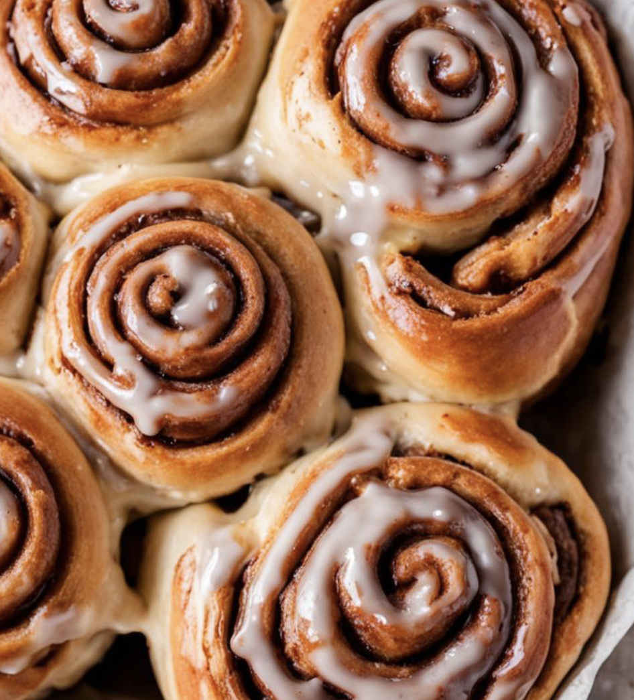

Sourdough Cinnamon Rolls

Ingredients:
- 1 cup sourdough starter (fed and bubbly)
- 1/2 cup warm milk
- 1/4 cup sugar
- 1/4 cup unsalted butter (melted)
- 1 teaspoon salt
- 1 egg
- 3 cups all-purpose flour (more if needed)
- 2 teaspoons ground cinnamon
- 1/2 cup brown sugar (for filling)
- 1/4 cup unsalted butter (softened, for filling)
- 1 cup powdered sugar (for glaze)
- 2 tablespoons milk (for glaze)
Instructions:
- In a large bowl, combine the sourdough starter, warm milk, sugar, and melted butter. Stir until the sugar dissolves.
- Add the egg, salt, and flour, mixing until a dough forms. Knead the dough for about 8-10 minutes until it becomes smooth and elastic.
- Place the dough in a greased bowl and cover it with a cloth. Let it rise at room temperature for about 4-6 hours or until doubled in size.
- Once the dough has risen, punch it down and roll it out on a floured surface into a rectangle about 1/4 inch thick.
- Spread softened butter over the dough, then sprinkle with brown sugar and ground cinnamon.
- Roll the dough tightly from the longer edge, and cut it into 12 equal slices. Place the rolls in a greased baking pan, leaving space between them.
- Cover the rolls with a cloth and let them rise for another 1-2 hours or until they have puffed up.
- Preheat the oven to 350°F (175°C). Bake the rolls for 20-25 minutes, or until they are golden brown on top.
- While the rolls are baking, make the glaze by mixing powdered sugar and milk together until smooth.
- Once the rolls are done, remove them from the oven and allow them to cool for about 10 minutes before drizzling the glaze over them.